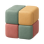

Too many ways to start
What if there was one?
Enter Stem Cell Mode
Just start
Morphs into the right thing
Finds the right repository to work in
Loops in the people who need to know
And self-organizes in your sidebar
Your interface needs
one button to start work
and one input box.
That’s it.
ENGINEERING

Auth refactorFix login bug
ANALYTICS
What would you like to create?
↵